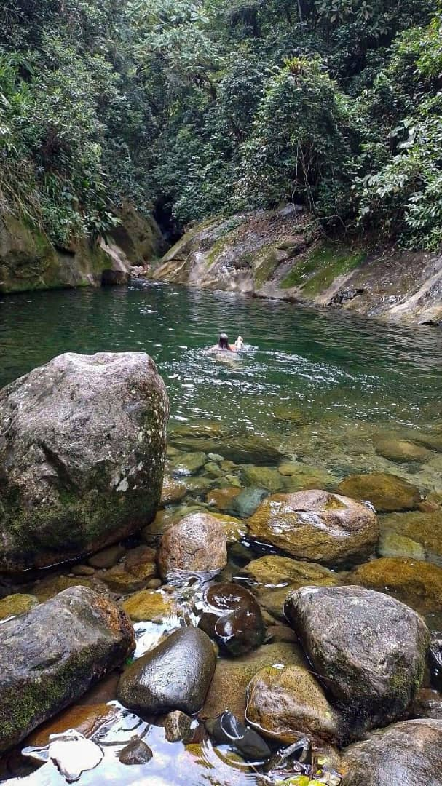
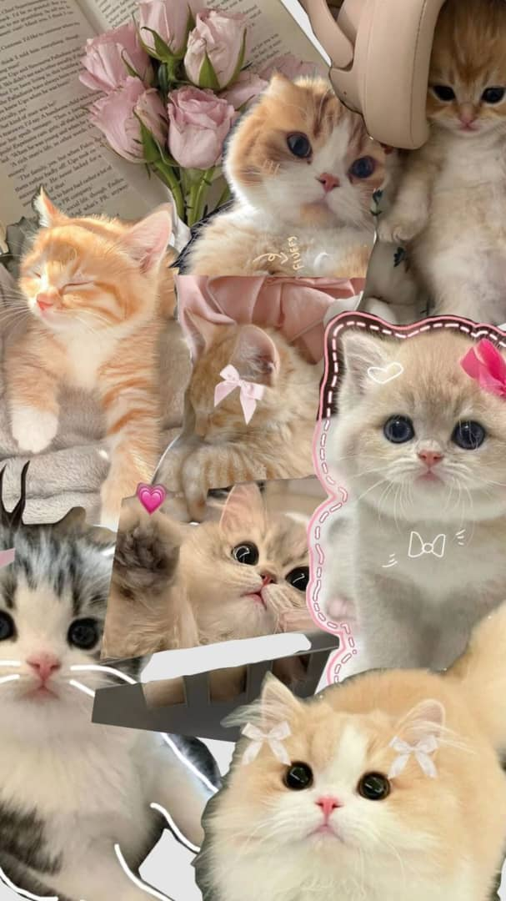

Yhorjana Godoy
"Bienvenidos a mi rincón en la web. Soy una mujer enfocada en sus proyectos y fiel creyente en el valor del trabajo bien hecho. En este espacio te muestro una parte de mi mundo: desde mis vivencias personales hasta los resultados de mi esfuerzo diario. ¡Gracias por acompañarme en este recorrido!"
Sobre Mí
Soy una mujer inteligente, responsable y profundamente trabajadora, que enfrenta la vida con un carácter firme pero siempre con la mirada puesta hacia adelante. Mi motor diario son mis dos hijos, quienes me impulsan a equilibrar con éxito mis roles como madre, secretaria escolar y estudiante universitaria. Me considero una persona auténtica y decidida, de esas que no se rinden ante los retos.
Fuera de la rutina, mi alma se recarga en la naturaleza: amo la libertad de los ríos, la inmensidad del mar y la paz que solo un atardecer puede regalar. Disfruto los momentos genuinos con mi familia y amigos, y siento un respeto profundo por los animales. Soy una mezcla de disciplina y pasión, siempre lista para emprender un nuevo viaje o un nuevo proyecto.
Mi Mundo en Imágenes


Mis Habilidades
Habilidades Duras
- Gestión Administrativa Escolar
- Organización de Eventos
- Atención al Cliente
- Gestión de Tiempo y Agenda
- Manejo de Herramientas Ofimáticas
Habilidades Blandas
- Resiliencia y Adaptabilidad
- Liderazgo Maternal
- Empatía y Comprensión
- Comunicación Asertiva
- Trabajo en Equipo